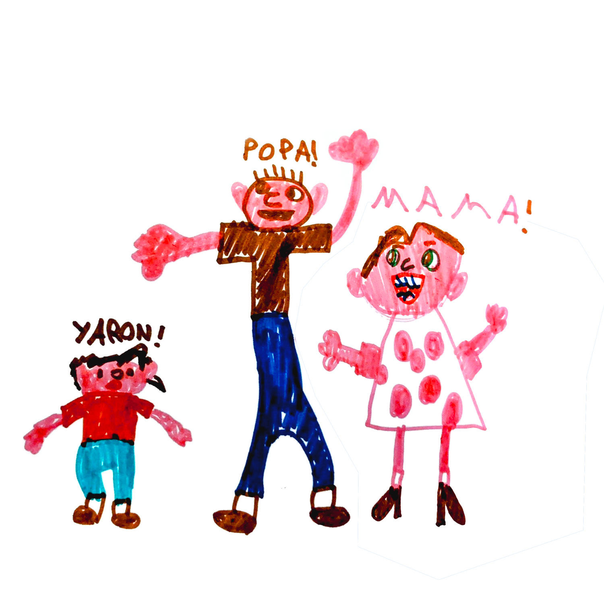
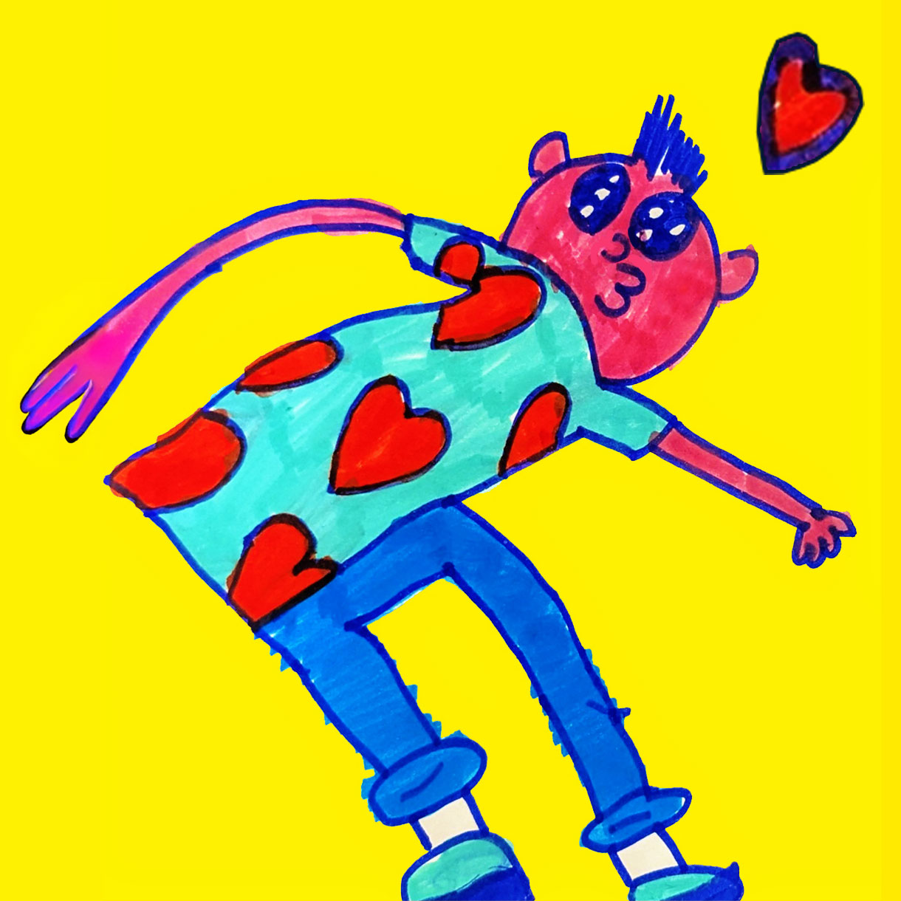

POPA! MAMA! YARON!
Patient Zero
"Life is but a brief crack of light between two eternities of darkness."
— Nabokov
The Wrong Diagnosis
Early 2021. The middle of the COVID pandemic. I notice I can’t smell anything. Given all the strange symptoms linked to the virus, I shrug it off, hoping it will pass.
For over a decade, I’ve battled anxiety, panic attacks, and depression. I’ve tried everything—psychotherapy, mindfulness, creative therapy, antidepressants. Nothing works.

"Action > Reaction"
Then, Ailish notices something strange. A tiny detail. My right arm doesn’t swing when I walk. Odd. Also, I take forever to put on my coat and shoes.
Small things, easily dismissed—until Dr. Google suggests something unexpected: Parkinson’s. There it is, a typo in disguise, sitting smugly at the top of the search results.
My next neurology appointment is Monday. The whole weekend, I live under the assumption my days are numbered. I look at my beautiful, sleeping son—this miracle of my own flesh and blood. I need to be here for him.
Monday comes. The neurologist gets straight to the point. "You most likely just have Parkinson’s. You won’t die from Parkinson’s—just with it."
Just Parkinson’s.